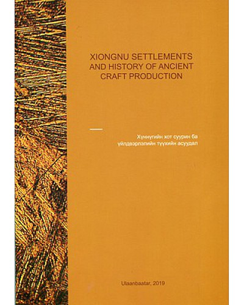

|  |
Дүгнэлт“Хүннүгийн хот суурин, үйлдвэрлэлийн түүхийн асуудал” сэдэвт олон улсын хурлын эмхэтгэл юм. Э нэхүү бүтээл нь “Хүннүгийн хот суурин, Үйлдвэрлэлийн түүхийн судалгаа” суурь судалгааны сэдэвт ажлын хүрээнд 2018 оны 9-р сард хийгдсэн олон улсын хуралд хэлэлцүүлэгдсэн Хүннүгийн хот суурин болон үйлдвэрлэлийн дурсгалт газарт явуулсан археологийн судалгааны сүүлийн үеийн баримт мэдээ, тэдгээр дурсгалт газраас илэрсэн олдворт хийсэн нарийвчилсан судалгааны үр дүн, мөн хөрш бүс нутагт хийгдсэн Хүннү болон ойролцоо цаг үеийн археологийн дурсгалт газарт хийгдсэн судалгааны үр дүн зэрэг сэдвээр бичсэн 12 илтгэлийг англи хэлээр хөрвүүлж эмхэтгэн хэвлүүлсэн байна. |
|---|
Гарах